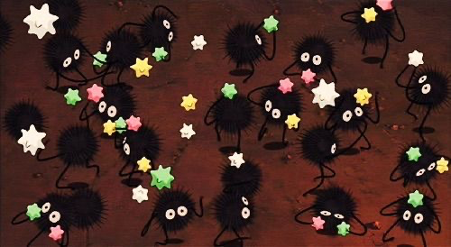

Family and Home
This is a mix of my immediate family, my pets, and my friends. My immediate family has supported me and given me a space to be kind, ambitious, creative, and overall, myself. I’ve been homesick every semester for them (it usually takes about a month to kick in). It only takes an hour to be homesick for my pets though. I could only fit one in here, but my three cats and my dog own much of my heart. Rosie is pictured above and she’s the love of my life. Finally, my friends are my teachers, vaults, lab rats, adventures, and home away from home. First and foremost, my home is the people close to my heart. It’s where I feel my family close to me– right now, that’s my hometown in Massachusetts and my community in Pittsburgh.

Why UX Design and Usability Testing? Where do you see yourself within this nexus of UX design and product development?
I’m definitely more into the design side of things– there have been points in my college career where I wish I had gone to school for graphic design. But, seeing as it is absolutely, positively too late for that, I’ve decided to take as many classes as I can that will give me digital experience, even if they’re not specifically graphic design, which is fine by me. My interest in UX and UI comes explicitly from my brother, who recently quit his headhunting job, completed a software engineering boot camp, and got a job as a software engineer. After talking to him about my regrets, he suggested I look into UI, and here I am. Though I don’t have a lot of experience with coding, I’ve taken a basic class and learned from my brother, and it doesn’t seem so daunting anymore.

Where do you want your knowledge and skills to take you?
I want to –and I know this is a hefty ask– love what I do. I want to be happy and I want my career to be one that matches my passion for creativity, diversity, and life itself. So I’m in the process of finding possible career paths that could achieve this for me– UI is one of them, but I’m also considering broadcasting, PR, audio editing– there’s a pretty long list, and I’m just not sure yet. Thankfully, I’ve been able to try out some things, whether it be through class or extracurriculars, and I’m slowly finding what I do and don’t like. I’m lucky to have had parents that allowed me to explore my love of art and show me it is possible to do things you love. I’m lucky to have a brother to explain coding and UX/UI to me, especially when I have no idea what I’m doing. I understand I might not find my ideal career immediately, but I’m going to try my best.